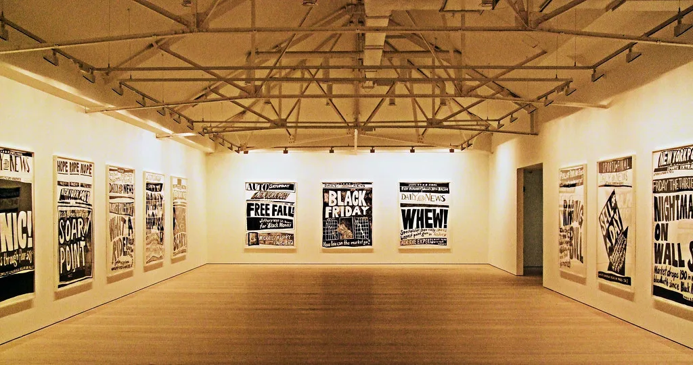

6일 코스피가 전 거래일 대비 324.11포인트(6.02%) 급락한 5059.69에 거래를 마쳤다. 장중 한때 지수가 5000선 아래로 내려갔고, 개장 직후에는 유가증권시장에 서킷브레이커가 발동되면서 20분간 모든 종목의 매매가 일시 정지됐다. 하루 만에 코스피 시가총액 약 267조원이 증발한 것으로 집계되며, 시장에서는 이날을 두고 '검은 금요일'이라는 표현까지 나왔다.
급락의 발단은 전날 미국 뉴욕증시였다. 미국 중간선거에서 민주당이 2008년 이후 최대 규모로 상·하원을 모두 탈환하면서, 대규모 AI 데이터센터 건설과 전력 인프라 투자에 대한 규제가 강화될 수 있다는 우려가 급속히 확산했다. 실제로 데이터센터 건설이 활발한 조지아·텍사스 주지사 선거에서도 민주당이 승리했고, 텍사스 주지사 당선인은 관련 사업 중단 필요성까지 거론한 것으로 전해진다. 이 여파로 나스닥종합지수가 5.52% 급락했고, 필라델피아반도체지수는 12.25% 폭락했다. 엔비디아는 9%대, 브로드컴과 오라클도 각각 6%대 하락했으며, 테슬라 역시 10%대 급락세를 피하지 못했다. 하루 만에 미국 증시에서 증발한 시가총액이 2조5000억 달러에 이른다는 집계도 나왔다.
충격은 곧바로 국내 증시로 전이됐다. 반도체 대형주 비중이 유독 높은 한국 증시 구조상 미국발 기술주 투매의 충격이 더 크게 증폭됐다는 평가다. 이날 삼성전자는 전 거래일보다 6.35% 내린 18만8700원에, SK하이닉스는 10.44% 하락한 113만2000원에 각각 거래를 마쳤다. 장중에는 낙폭이 삼성전자 11%대, SK하이닉스 13%대까지 확대되기도 했다.

외국인 투자자들의 매도세도 두드러지게 나타났다. 이날 외국인은 코스피 시장에서만 2조7690억원어치를 순매도하며 6거래일 연속 매도 우위를 이어갔다. 전력·증권주 등 그간 AI 투자 확대 수혜로 꼽혀온 업종까지 동반 하락하면서, 이번 조정이 반도체주에 국한되지 않고 시장 전반의 투자심리 위축으로 번졌다는 분석이 나온다.
다만 증권가 일각에서는 이번 급락이 실제 수요 둔화보다는 수급 충격에 가깝다는 해석도 나온다. 한 증권사는 삼성전자·SK하이닉스·마이크론의 미주 영업·마케팅 채널을 점검한 결과 당장 메모리 반도체 수요 자체에는 이상 징후가 감지되지 않았다고 밝혔다. 이에 따라 AI 산업의 장기 성장 전망이 훼손됐다기보다는, 정치적 불확실성에 따른 단기 투자심리 위축으로 보는 시각이 힘을 얻고 있다.
한편 이번 급락과 맞물려 메모리 반도체 시장의 경쟁 구도 변화 가능성도 거론되고 있다. 최대 고객사인 엔비디아의 요청에 따라 TSMC가 메모리 반도체 생산 진출을 검토 중인 것으로 알려지면서, 그동안 삼성전자와 SK하이닉스가 주도해온 메모리 시장에 새로운 경쟁자가 등장할 수 있다는 관측도 나온다. 투자자들은 당분간 미국의 AI 인프라 정책 방향과 반도체 수급 지표를 함께 주시하며 변동성 장세에 대비할 필요가 있다는 조언이 뒤따른다. 올해 들어서만 서킷브레이커가 11차례나 발동됐다는 점은 그만큼 글로벌 증시의 변동성이 구조적으로 커졌음을 보여준다는 평가도 나온다. 금융당국 역시 추가적인 투매 가능성에 대비해 시장 안정 조치 여부를 검토 중인 것으로 알려졌다.